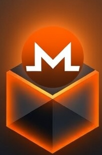

entry 3 · signed
Swapped to anonymous mode. Same account, same notes, nothing sees my IP.
bafyreihq4k…7mzt
prev ↑ bafyreic2xn…q9de

NosdagNostr client · desktop
Bring the npub you already have. Nosdag speaks ordinary Nostr — your follows, your relays, your notes readable in every other client — and adds an IPFS node inside the app so the data itself lives on your machine instead of somebody's server.
entry 3 · signed
Swapped to anonymous mode. Same account, same notes, nothing sees my IP.
entry 2 · signed
Attached a photo. It went to my node, not somebody's bucket.
entry 1 · signed
First note from my own machine.
Ordinary Nostr events on relays — and on your node, each one linked to the note before it by content address. Pin the newest and you have replicated the whole history, verifiable against your key by anyone.
What it is
Nostr already gives you an identity nobody can revoke and a network nobody owns. What it leaves open is where your notes and media actually sit — in practice, on relays and image hosts run by other people. Nosdag answers that half without changing the protocol you're already on.
Compatibility
Import your key and your follows come with you. You post normal signed events to normal relays, and people on other clients read you as usual. Nothing here is a walled garden.
Storage
Notes, media, and long-form also live on a node running on your machine, addressed by content — so a relay going down doesn't take your history with it.
Payments
A wallet is built in. Tip any note or profile in XMR, or paywall a post and sell the key. No custodian, no invoice server.
Privacy
Run the whole app through Tor — relays, peers, media, wallet. Peers reach each other through onion services. Already running your own Tor router? Point Nosdag at it.
Availability
Link a pinning service, host the accounts you follow, or export your entire history as a single file. Nothing about that is the app's decision to make.
Download
Pick whichever suits your system. They are all the same app, and nothing is code-signed yet — your system will warn about an unknown publisher. On Windows there's an untested zip below, and running from source works on any OS.
Recommended
Portable, nothing to install. Download, make it executable, run it.
chmod +x Nosdag-0.1.4-x86_64.AppImage ./Nosdag-0.1.4-x86_64.AppImage
Debian · Ubuntu · Mint · Zorin
Installs to your applications menu like any other package.
sudo apt install ./nosdag_0.1.4_amd64.deb
Keep the ./ — it tells apt to install the local file. Plain apt install nosdag won't work; Nosdag isn't in an APT repository.
Any other distro
Extract it anywhere and run the nosdag binary inside.
Check what you downloaded against SHA256SUMS.txt: sha256sum -c SHA256SUMS.txt --ignore-missing
Mac
Tested on Apple Silicon. Open the DMG and drag Nosdag to Applications.
Download for Apple Silicon Intel (untested)
xattr -cr /Applications/Nosdag.app
Nosdag isn't notarized with Apple yet, so macOS refuses the first launch. The command above clears the quarantine once — or let it block, then approve it under System Settings → Privacy & Security.
ffmpeg on your PATH lets you attach video from a phone — Nosdag strips the metadata and converts it so everyone can play it. Tor is needed for anonymous mode; without it, everything else still works.
There is a Windows zip on the releases page, but nobody has confirmed it runs — it was cross-built on Linux and no Windows machine was available to test it. It may not start at all. There's no installer yet either; extract the zip and run Nosdag.exe inside. Windows will warn about an unknown publisher, because it isn't code-signed.
If you try it, please say whether it worked — that report is the only way it gets verified. Send a note on Nostr to:
npub1xhfclgh0klylfvdlyzjd9n0dwvd32tkcwxs24jwhydrjvhymgtvql23s4p
Or run from source
Four commands, the same on Linux, macOS and Windows. It suits anyone who would rather read the code first, wants Nosdag on Windows without gambling on the untested zip, or is on a distro the Linux builds don't fit. Steps 2 to 4 are identical on every system; only installing Node differs.
The repo ships an .nvmrc, so anything that reads it picks the right version. Node 22 is a hard requirement — Electron 42 won't install on older.
Linux
# nvm — or your package manager, as long as it gives you Node 22+
nvm install 22 && nvm use 22
macOS
# Homebrew brew install node@22 git # git also comes with the Xcode command line tools: xcode-select --install
Windows
# in PowerShell — winget ships with Windows 10 and 11 winget install OpenJS.NodeJS.LTS winget install Git.Git # then close and reopen PowerShell so PATH picks them up
Prefer installers? Node from nodejs.org and Git from git-scm.com work just as well. On Windows use PowerShell or Windows Terminal for the rest of these steps.
git clone https://github.com/grahamonero/nosdag-pub.git cd nosdag-pub
This downloads the Electron runtime and the IPFS (Kubo) binary the app bundles, so give it a moment and a working network connection.
npm install
On first launch you pick a network posture: ordinary internet, or anonymous over Tor.
npm start
ffmpeg lets you attach video from a phone. Tor is needed for anonymous mode. Neither is required for everything else to work.
# macOS brew install ffmpeg tor # Windows — ffmpeg via winget, Tor from the Tor Expert Bundle winget install Gyan.FFmpeg
Windows Tor downloads live at torproject.org. If Tor isn't on your PATH, point the app at it — the syntax differs by shell:
# macOS / Linux TOR_BIN=/path/to/tor npm start # Windows PowerShell $env:TOR_BIN="C:\path\to\tor.exe"; npm start
Nosdag is an Electron app, so these steps should work there too — macOS is confirmed on Apple Silicon — but development happens on Linux, and nobody has yet reported a clean run on Windows. If you try it, an issue report either way is genuinely useful.
FAQ
Getting started
No. It works — notes, media, threads, tips, Tor mode and history backup are all built and used daily — but it is pre-release software: Linux and Mac builds, nothing code-signed, no auto-updates, and anonymous mode in particular is experimental. Treat it as something to try, not somewhere to put your only copy of anything.
Packaged builds exist for Linux (tested) and macOS — Apple Silicon is tested, Intel isn't — plus an untested Windows zip. From source, all three work with Node 22+; day-to-day development happens on Linux, so that is the best-trodden path. Signed installers and auto-updates are the next milestone.
Everything you run is in the nosdag-pub repository, MIT licensed. Read it before you trust it with a key — that is a reasonable thing to expect of software like this.
Nostr compatibility
Yes. Paste your nsec at sign-in and your profile, follow list, and relays come with you — they live on relays, not in any one client. Post from Nosdag and people reading you in Damus, Amethyst, or anything else see your notes normally.
Sign in with an Amber bunker if you would rather not paste a key. Browser-extension signing is not available, because a desktop app has no browser extension to talk to.
A place for the data. Alongside the usual relay event, each note is stored on the IPFS node inside the app as a signed object that links to your previous one, and a small pointer on relays says where the newest one is. Anyone can follow that pointer and pull your whole history, verified against your key.
That is what makes the rest possible: media served from your node instead of an image host, long-form and history that survive relays dropping your events, and a portable archive you can back up as one file. It uses standard Nostr event kinds to do it, so nothing here breaks other clients.
Your notes and data
Someone has to be holding a copy. Your node serves your data, so when it is off, your media can stop resolving for other people.
Three answers ship in the app: link a pinning service so a copy stays online, let the people who follow you host your account on their nodes, or accept that you are only reachable while you are running. Nosdag shows you which of these is true rather than implying your data is magically everywhere.
No. The bundled node uses its own ports — API 5201, gateway
8201, swarm 4201 — specifically so it cannot collide with a
standard IPFS Desktop or Kubo installation.
Privacy and keys
No more than on any other Nostr client. Your notes are public and signed — anyone can read them and verify they came from your key. That is the point of the format.
What Nosdag protects is different: anonymous mode hides your IP and location from relays and peers, Monero keeps payment amounts and addresses off a public ledger, and direct messages are encrypted. If you need the content of a note to be private, do not post it.
Then the account is gone. There is no reset, no support address, no recovery — your private key is the account, and nobody else has it, which is the whole arrangement. Export it from Settings the first time you open the app and keep it somewhere offline.
Yes. On the Anonymous Mode page, point Nosdag at any running SOCKS proxy — a tor router, a Whonix-style gateway, or system tor — and it uses that instead of starting its own.
One trade-off: without control over that Tor instance the app cannot publish an onion service, so it can read the network but nobody can fetch your notes and media directly from your node while that setting is on. The app tells you this on the same page.
Payments
Because a tip on a public timeline is a public payment. Monero keeps the amount, the sender, and the receiving address off a readable ledger by default, which fits a social app better than a transparent chain does. Nosdag is Monero-only by design.
No. The wallet is built into the app and syncs against public Monero nodes, so tipping works out of the box. Your keys never leave your machine — the node only relays blocks and broadcasts transactions, it never holds anything.
If you would rather not trust a public node, the Tip Jar lets you point the wallet at your own. In anonymous mode that traffic rides its own Tor circuit, kept separate from your relay and browsing circuits.